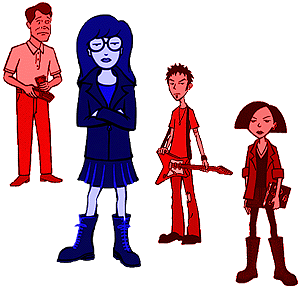
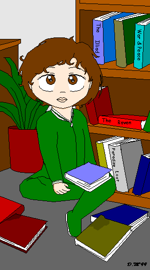
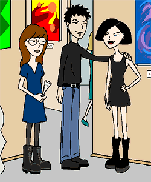

Connect Four
by Diane Long
Chapter One
Each engrossed in a newspaper; Daria and Jake sat side by side at the kitchen table. Only the occasional rustle of a turning page broke the quiet. Neither really wanted to talk. Being together in silence was interaction enough for these two. Jake had always been a man of few words, and Daria had inherited this tendency. More than either one realized, she was very much her father's daughter. They certainly meshed with each other better than with the other members of the family. They had often gravitated towards each other in rare times of solitude, sharing the quiet with each other like a gift. From the moment Daria had dragged her coloring books and crayons out to join him at the table instead of watching cartoons with Quinn, they had spent most Saturday mornings together like this. At one point, Jake had ordered a second subscription of the New York Times Weekend Edition without comment, so he and Daria could read at their own paces, without disturbing each other. Saturdays had become a long standing, if unremarked, tradition for the two of them. However, in the past few months being together like this was complicated by distance. Daria was in the thick of her first Semester at Yale and had little opportunity to come home. To her surprise, Daria found that she had missed these quiet moments with her dad. This was the first full weekend she had been able to spend at home since she started school, and Daria was enjoying the familiarity of the moment.
She looked over at Jake and smiled. Even though he was a little flaky sometimes, he had been a very good father. While his attempts at standing up to Helen on her behalf had often backfired, he had always tried. And even though Quinn had cleverly manipulated a lion's share of money and attention out of him, it had been very clear to Daria that he favored her over Quinn. It had also been clear that he was very proud of her accomplishments. Her thoughts wandered back to the time she had first understood this....
...It was a grey and blustery October afternoon when a nine-year-old Daria walked home from school a little faster than usual. Her black Converse high tops scuffed the pavement with a quick cadence, and the maroon sweatshirt tied around her waist fluttered behind her in the wake of her speed. There was some good news that she wanted to tell her Dad right away. She wasn't exactly excited about it, but she had a good feeling in the pit of her stomach. A ghost story she had written for a class assignment had been published in the Highland Herald. Her first By-line. She couldn't wait to show Dad, and she also hoped she could get some money out of this too. She had just founded the Bank of the Pillowcase and was unsatisfied with its assets. As dry leaves whirled across her path, she turned in at her house and hurried up the walk. Opening the door, she paused and sniffed. It was the scent of freshly baked chocolate chip cookies. She grinned slightly. Ever since Dad had started telecommuting, he had really gotten into cooking. Lately there had been lots of fresh baked goodies for her to try after school. Even though she wondered if it all might be a ploy to get her to eat more, she liked sweets as much as the next kid.
"Hey Kiddo? Is that you?" came a voice from down the hall.
"Yeah," Daria said, hanging her jacket up in the closet.
"Let me finish up this phone call and I'll be right there."
"OK." Newspaper in hand, Daria headed for the kitchen.
As she suspected, there was a big plate of cookies on the kitchen table with two empty glasses set out beside it in obvious invitation. She poured herself some milk and sat at the table to wait for her Dad. She bit into one of the cookies. It was still warm and the chocolate chips were a little gooey.
"Like the cookies, Kiddo?" Jake asked coming into the kitchen. His tie was loosely knotted and hung well below the open collar of his dress shirt.
Her mouth full, Daria only nodded.
"It's a special recipe. Came from Bloomindales originally, I think. It cost the poor sucker who bought it a hundred thousand dollars, but I got it out of a magazine for free. Not bad for your old Dad, huh Daria?"
Daria rolled her eyes. She had heard that urban legend before.
"How was your day at school?"
Daria washed the last of the cookie down with milk. "It was OK. I have something to show you."
Jake arched his eyebrows. It wasn't often Daria offered to share anything with him. "What is it, Munchkin?"
Daria shot him a dirty look. She was very touchy about her height, or rather her lack of it.
"Ooops. Sorry, Kiddo."
Wordlessly Daria handed him the newspaper. It was already turned to the section where her story was printed as part of a juvenile Halloween extravaganza. Jake had almost begun to read it when Helen and Quinn came in from the garage.
"Daddy! Guess what?" Quinn jumped into Jake's arms. "I get to play the head pilgrim in the school's Thanksgiving play!"
Still holding the paper, Jake twirled Quinn around. "That's great honey! My daughter the actress!"
Helen beamed. "That's right! We are very proud of you, Quinn. Aren't we, Daria?"
Disgusted, Daria stuffed a bite of cookie into her mouth with a scowl.
Quinn made a face. "Ewww! Don't eat those Daria! You'll get even fatter."
"Quinn!" Helen reprimanded mildly. "Daria isn't fat, she is just a little short for her age. We want her to eat more so she will catch up with you."
Daria put down the cookie and glared at Helen.
Helen sighed. "Daria, finish that cookie. And don't glare."
"I don't want it."
"Eat it - NOW."
Daria crossed her arms and assumed the blank look she knew drove her mother crazy.
"Daria Morgendorffer. You will eat that cookie or we will take you to get growth hormone shots again."
Jake looked concerned. "Helen, those shots hurt her too much. The doctor said if we just wait..."
"Jake!" Helen cut him off.
The newspaper completely forgotten, Jake focused his attention back on Quinn. "We should celebrate Quinn's success! What do you want, sweetie?"
"Can we go shopping for a new outfit, daddy? For the play?"
"Sure we can! Let me make a phone call and after that we'll go to the mall." Jake put Quinn down and headed back to his office.
Daria looked at Quinn with distaste. "I didn't know they sold pilgrim outfits at the mall."
"Oh, eat your stupid cookie and shut up, Daria!" Quinn flounced out of the room.
"Well? Cookie or shots?" Helen asked menacingly.
Those shots had really hurt, and she had to have them twice a week. Sighing, Daria ate the cookie, resenting every bite. When she finished it, she headed for her room, hoping they would forget to include her in the mall excursion.
As she passed by Jake's home office, she heard something that gave her pause. She lingered by the door, listening.
"...yeah? Well, my oldest daughter Daria has a story published in the evening edition of the paper!" said Jake's voice.
"What? Oh...nine....yeah, nine going on thirty...she's so smart it's scary sometimes...she certainly didn't get it from me...Hell, no, I started the college fund for her when she was six months old...why...she disabled every baby lock in the house, and I knew she was a genius...hmmm...oh, the Ivy League, definitely...probably will be a writer....what do you mean 'I will be proud of her', I'm proud of her now, dammit...Quinn? Well...Quinn...is darling....but," here Jake's voice sounded embarrassed.
"She needs a little more encouragement than Daria...exactly...you heard right....not enough oxygen at birth...we worry...things are harder for her, but her people skills really compensate...yeah, it's a good thing Daria doesn't need so much from us because Quinn really does. Anyway, did you like the proposal?"....
...Daria snapped back to the present. She looked at her dad again. He had never remembered to give her any recognition for that story, but from that moment on she had understood he was proud of her even if he didn't say so.
Shaking her head, Daria put down the paper. "Hey Dad, want some coffee?"
"Coffee sounds great, Kiddo!" Jake smiled at her. It really was great having his brilliant, successful daughter back home. He watched her pour the coffee. She seemed much more self-assured now. A freshman at Yale, he had always known she would go to a great college....

illustration by Diana Morgan
...A much younger Jake, about twenty-five, twisted in his sleep. Something wasn't right. He looked over at Helen, who was sleeping soundly beside him. She hadn't seemed to notice anything amiss. That wasn't a surprise, she had final exams all this week and had been studying almost around the clock. He hadn't even noticed when she had finally come to bed. As Jake thought about Helen, a soft thumping sound came from downstairs. Worried, Jake slid out of bed and headed for Daria's nursery. Her crib was empty - again. It looked like she had made another great escape. How did she do that? Despite the many "baby safe" precautions they took, she always found a way to get around them. She was definitely a precocious one-year-old. No matter, he had a good idea about where she was. He paced back into the hall and went towards the stairs. As he expected, the baby gate had been disabled and was pushed to the side. Jake went downstairs and into the study. When he flipped on the lights, he found Daria planted in front of the oak bookcase. She was methodically pulling each of the books off of the two lower shelves, allowing them to fall into a rough semi-circle around her. Some of the books had damp corners where she had paused to take a chew. She stopped in her busy task and regarded him seriously. Her footed green romper was all twisted up, and her brown hair was tangled around her face. She looked adorable.
Jake smiled and squatted down in front of her, trying to get to her level. "Hey Kiddo! Ready to go back to bed?"
Daria pulled another book from the shelf and let it fall with a satisfying thump. "No."
Jake grimaced. Not only had Daria started talking early, she'd understood the meaning of 'no' first and didn't mind using it. "Aw, come on, Daria. Aren't you sleepy?"
She looked thoughtful. "Nope." She lugged a larger book into her lap and started to gnaw on the corner.
Jake considered for a moment. Daria was teething, maybe she was in pain. "Do your teeth hurt?"
Still chewing, Daria nodded.
"Hold on Sweetie, I can help with that." Jake rushed up to the bathroom and brought back a small bottle of Ambisol. "Put down the book, so I can give you some medicine."
"No."
"Ok, then." Jake scooped up Daria, book and all, and headed for the couch. He settled her in his lap and unscrewed the bottle. He put some of the analgesic liquid on his index finder and tried to spread it onto Daria's gums.
She snapped her mouth shut and looked at him crossly. "Stinks," she grumbled through her closed lips.
"I know it stinks, Kiddo. It probably tastes bad too, but it will make your mouth stop hurting. Come on, open up, this will work better than that book."
Daria complied, but her look of long suffering tolerance made Jake chuckle while he swished the soothing liquid onto her gums. As he did so, he could feel the bumps of her little teeth starting to poke through the gums. She must really be in a lot of pain. Poor kid. He gave her a tight hug, until she started to squirm.
"Nope! Nope! Nope!"
He let go. "That better? Time for bed." Jake tried to take the book, but Daria held on.
"Read," she said with emphasis.
"This book?" It was Milton's Paradise Lost. Well, that would certainly put her to sleep. With a yawn Jake started reading out loud, and before long both he and Daria were nodding off. As soon as Daria was asleep, Jake set the book aside and carried Daria up to her room. As he tucked her in, she opened an eye half way and murmured "lost" in a sad, sleepy voice. Wow. She had understood at least some of what he had been reading. He stared at her as she closed her eye and fell back asleep, a normal baby again. Awestruck, Jake headed back to bed already planning Daria's future. He had better start contributing more to that college fund. Daria was obviously headed for greater things then Middleton College could offer. Maybe the Ivy League.....
...A sharp knock on the back door pulled him from his reverie. He noticed that Daria was deeply concentrating on the paper. He doubted that she had even heard the nock. "I'll get it, Sweetie."
Daria looked up. She couldn't see what was going on, but listened with curiosity as Jake murmured something to the visitor and dug into his pockets for a tip. She smirked when he turned around revealing a long white florist's box tied with a red bow. It looked like Quinn had a new admirer.
"Hey Daria, these are for you! Who is the lucky fella?" Wearing a silly grin, Jake handed to box to Daria.
Daria was more than a little flustered. "Umm...I'm not sure what this is about." She untied the bow and lifted the lid off of the box, revealing a dozen long stemmed purple roses. She breathed in the scent while she opened the enclosed card. It said:
Happy first anniversary tomorrow, today, or yesterday. Whatever.
--Love, Trent
P.S. It really is tomorrow.
Daria paled. She and Trent had been dating for a year as of tomorrow, and she had completely forgotten about it. He usually was the more romantic one, of course he would remember. He normally didn't seem to mind that she wasn't as demonstrative as he, but forgetting their anniversary was unforgivable. It would break his heart.
"Dad, will you put these in water? I have to make a phone call now." Daria dashed out of the room without waiting to hear his answer.
As soon as she was safely locked in her room, Daria phoned up Jane at her studio in New York. The phone rang and rang. "Come on! Answer!" Daria thought pacing the floor anxiously.
The line picked up. "Yo?"
Finally. "Jane, it's me. I really need your help," Daria said in a tight voice.
"Daria? What's wrong? You're not pregnant are you?"
"Shut up. This is serious," Daria snapped.
"Pregnancy's not serious?"
Daria held her breath and counted to ten. She really wasn't in the mood for Jane's twisted sense of humor.
Interpreting the silence correctly, Jane relented. "Okay. What's wrong?"
"Tomorrow is the first anniversary of my relationship with Trent. I forgot. I don't have anything for him."
"Don't worry. Oblivious boy probably forgot too," Jane said reassuringly.
"I don't think so. He sent me roses today."
"How traditional," Jane said dryly.
"They were purple roses."
"Whatever. So go buy him something. You have a whole day to figure it out." Jane sounded amused.
"Buy him what?"
"He's your boyfriend," Jane pointed out.
"He's your brother!" Daria retorted.
"Exactly. Which means I have no idea what a girlfriend would buy him for an anniversary present."
"Jane, come on, I'm not good at this stuff."
"You're on your own kid," Jane chuckled.
"Don't laugh at me. I'm desperate here," Daria said dejectedly.
Jane sighed. "Look, I'd help you if I could. If I was in town we could go shopping together and figure it out. But since I'm not, you'll have to do it yourself."
"Jane...."
"Daria, you know the stereotypical anniversary presents as well as I do. That's all I can think of right now. Honest."
"Okay. But if you think of something, let me know." Daria twirled the phone cord around her little finger.
"Sure. How's school."
"The same. How's New York?"
"Pretty good. I have my first opening tomorrow. Too bad you guys'll be too busy to come. I was going to invite you," Jane said wistfully.
"Maybe next time. Later," Daria said absorbed in her own problems.
"Yeah, later."
Daria hung up the phone and headed back down to the kitchen. She found Jake seated back at the table engrossed in the paper again. He had beautifully arranged the roses in a cut crystal vase. He was a man of surprising talents sometimes.
"The roses look great Dad." Daria slid back into her spot at the table and picked up her section of the paper.
"Thanks, Daria! I learned how to arrange flowers at military school. They made the students make the table center-pieces when they had banquets to honor big, important, heads of state...yeah, while we slaved away the old man was back home getting drunk...while little Jakey pricked his fingers on rose thorns...."
Her Dad's occasional obsessive ranting about his childhood didn't annoy her anymore. They made her feel sad for him. Her grandfather must have been a monster. Even now, her father still wasn't free from his control. "Dad," Daria said patiently. "You don't have to do that anymore, right? You arranged the flowers for yourself this time."
Jake shook off the memory. "Good point. So who were the flowers from?"
Daria ducked behind the paper. She had never gotten around to telling the family about Trent. She had meant to, but a whole year had flown by before she knew what was happening. She was embarrassed about not sharing this before now. "Ummm...."
"Big secret, huh? Alright then, you don't have to tell old dad if you don't want to!" Jake said with a pleading look that said otherwise.
Daria ignored the look and went with the words. "OK. Can you hand me the Cashman's insert?"
Jake handed it to her and looked at her oddly. "Why do you want this, Daria?"
Daria had already flipped to the Men's section, "Oh, I might do some shopping there." All she found was a photo shoot of men in boring underwear sets. "Then again, maybe not." Shutting the insert, she got up from the table.
"I'll see you later, Dad. Errands."
Jake looked disappointed. "OK Sweetie. See you later."
Jake watched Daria climb into her car with a singularly determined look on her face. He smiled fondly. This had something to do with those roses, he just knew it. He wished she hadn't had to leave, though. It was great to have her back in the house, and he had been looking forward to spending their Saturday time together. She was almost all grown up now. Soon they would hardly spend any time together at all, Saturdays or not. She would probably move to another town after college, maybe join her friend Jane in New York. He missed her so much now that she was gone and knew that it would only get worse. He remembered the first time he realized, as a parent, that Daria wasn't going to stay with him forever. It was her first day of kindergarten, and he had been the one to take her there....
...Jake and Daria stood in the open door way of the classroom, watching the antics of the children inside. Jake shifted his gaze and grinned down at Daria, thinking she was the cutest kid in the whole room. Short for her age, the top of Daria's head didn't quite reach Jake's mid thighs. She wore a pair of jean overhauls with new, glaringly white, Keds sneakers. Helen had even pulled Daria's hair into two achingly tight ponytails before they had left the house. Yep, a real cutie. "You ready to go in and make some new friends, Kiddo?"
Daria tilted her head up at Jake, looking pale and pinched, and shook her head 'no'.
Jake's smile softened. He had known this would be hard for her. She hadn't been around other kids very much before this, so it was all very new. Daria had never adapted to change very well, particularly any changes that had to do with new people. She must be scared to death. He hoped it would go ok OK for her. School had been a nightmare for him, and he wanted it to be better for Daria.
He was being very careful to appear calm and positive for Daria's sake, but in truth he was just as anxious as she was. His little girl was growing up, and he wasn't entirely sure he liked it. "Are you nervous, Sweetie?"
Daria licked her lips, and peered at him through her thick glasses. "Dad, I don't want to go in there."
Jake patted Daria's head. "Sure you do! It will be lots of fun. Look over there at all of the books, I bet there are some you have never seen before!"
Daria looked over at the children's books crammed into a windowsill and several bookcases, and her expression changed from anxiety to a look of serious consideration. Then, as two screaming little girls chased each other past the doorway, her expression grew fearful again. She slid an arm around his leg and held on tightly. "When are you coming back to get me?" she whispered.
Jake heard the real question hiding behind her words: 'Are you coming back? Are you leaving me here forever?' He looked her straight in the eye, and said as seriously as he could, "I'm coming back. I promise."
"When?"
"Let's see, its eight now and school gets out at two... I'll be back in six hours, I think."
"Six hours?" She made it sound like she had gotten life without parole. She let go of his leg and took a big breath. "OK. Six hours. Don't be late, Ok?"
"Sure thing, Sweetie."
Daria walked in to the room without looking back....
...Jake came back to the present, but the memory stayed with him. The teasing about her height and glasses had begun almost immediately. When he had rushed to intervene, the teachers had firmly insisted that he leave and let Daria handle it herself. It had broken his heart to leave her there sitting alone in a corner, while the other kids laughed at her. For the first time in her life she was not under his protection, and he had realized that things would never be the same again. Today was further proof that they would just keep on changing.
Chapter Two
Daria parked her car and fed the meter. Dega street hadn't changed very much in the few months since she had last been there. Axl still had his piercing studio, and there were still many boutiques that catered to the various subcultures that frequented this area. She walked up to a shop window that displayed alternative fashions. That wouldn't do. Like her, Trent had found an outfit that suited his tastes and didn't see the need to change. Even if he was looking for a change, he wouldn't want anything this funky. She just couldn't see him in tie-dye. Maybe she should buy him a new pair of grey jeans, a pair that had both knees intact. Wouldn't that be romantic?
Frowning, she moved on to the next window. This store seemed to sell a variety of boots and alternative footwear. She almost went in then reminded herself that she didn't know his shoe size. Besides, she was the one who wore the boots in this relationship. Ignoring the temptation of a half price Doc Martin's sale, she moved on to the next shop. This one looked a little more encouraging: Used CDs. She went in feeling hopeful. Squinting in the low light and wrinkling her nose against the musty smell, she went to the little bins and started to flip through the CD jackets. Hmmmm...Korn, Zappa, Bauhaus, Cake, The Mighty, Mighty, Bosstones.... She knew Trent liked these bands, but she couldn't remember which CDs he had and which he needed. She bought a Cake CD for herself, and left the store feeling frustrated. Why was this so hard? She loved Trent, so why couldn't she buy him a simple present?
The next store specialized in musical instruments and accoutrements. She dismissed this store immediately. Trent was the expert in this sort of equipment, not her, and there was no way she could even begin to make an informed purchase. Her frustration growing, she glanced down the row of remaining shops. Books? No. Tawdry Lingerie? No way. Good thing Jane wasn't here. Gift Certificate from Axl's? Redundant. An Espresso machine from the MEAN BEAN coffee boutique? Nope, he wouldn't use it. It looked like Dega street wasn't going to solve her problem for her.
In a dark mood, Daria got back into her car. She hated shopping in any circumstance, but this was the worst experience ever. If she didn't figure this out, she was really going to hurt Trent. Too much pressure. She slipped her car into gear and raced off, relieving some of her stress through speed.
Chapter Three
After an intensely frustrating day exploring the various and sundry shopping centers of the greater Lawndale area, Daria went home empty-handed. She was going to let Trent down tomorrow. She felt like a jerk. Twilight was fading into night as she entered the house through the back door. Inside, It was dark and strangely silent.
"Hello?" she called out as she switched on a light.
There was no reply. She noticed a Post-It on the kitchen table and walked over to pick it up.
Daria:
I guess you forgot that we were all supposed to go out to dinner tonight. Why am I not surprised? We went on ahead with out you. You'll just have to fend for yourself. You know how to use the microwave.
Mom
Daria crumpled up the note. OK, now she was an even bigger jerk. She grabbed a bottle of Bass Ale from the fridge and headed up to her room. Things were going from bad to worse. The sooner she was in bed the sooner she could find relief from this stress. She tried to twist the top off of the bottle of beer as she trudged up the stairs. Blast, it wasn't that kind of bottle top. She needed an opener. Feeling gloomier than ever, she entered her room and locked the door behind her. She sat the impenetrable bottle of beer on her dresser and quickly slipped out of her clothes, leaving them in a rumpled pile on the floor. Kicking the pile dejectedly, she pulled on a nightshirt, flipped off the lights, and sought her bed hoping that sleep would take her quickly tonight. She rolled her covers around her in a tight cocoon, and tried very hard not to imagine the hurt she would see in Trent's eyes tomorrow....
...Wearing a simple sleeveless black cocktail dress, long black gloves, and clutching a small jet beaded handbag, Daria rushed under the awning of a fancy looking French restaurant. She was stopped at the entrance by a grim looking, and short, doorman. Slightly out of breath from hurrying, Daria nervously patted a loose strand of hair back into place in her elegantly upswept hairdo and caught her breath. "Excuse me, but is this the Masionette?" she asked the little man.
He looked up at her irritably and said with a patently false French accent, "Perhaps zis is ze place you are looking for. Perhaps not. Who are you trying to be? Audrey Hepburn? It's not working for you."
His rude comments slid over her. She was too worried to notice. "Oh, please," Daria said looking around anxiously. "This is really important. I'm late for my anniversary dinner."
The man's eyes narrowed with distaste. "Ah. You must be zat bad, bad, woman. Daria Morgendorffer?"
His bad attitude and rude comments were beginning to sink in. Without knowing why, Daria suddenly felt horribly ashamed. "Yes," she said quietly, looking at his feet.
"Zen, shame on you for breaking a good man's heart." Snorting contemptuously, the little man clapped his hands together. "Maurice! Jean Luc! Show zis hussy what she has done!"
Two large bouncers dressed in tuxedos each grabbed one of Daria's upper arms and escorted her inside. The restaurant was decorated all in shades of red with many heavy crimson curtains draped across the walls. Even the lighting was a murky poppy colour, making it difficult to see very far ahead. The two men dragged Daria over to a to a table topped with a large bouquet of purple roses. In the red light she could see Trent looking disheveled in a rumpled tuxedo, slumped face down over his plate. There were many empty martini high ball glasses strewn around the table.
"Have a seat, doll," grunted one of the henchmen as they pushed her into a chair. Both goons stood guard on either side of her chair. It was clear that she wasn't going anywhere.
Daria immediately noticed that there were many packages piled up on the table by her appetizer plate. They each bore her name. She also noticed that they were all covered by a thick coating of dust. She picked up the nearest package and shook it. The faint rattling sound roused Trent.
"Daria? Is that you? Is that REALLY you?" Trent asked, rubbing the sleep out of his eyes. "I've been waiting so long."
"Trent... I'm sorry I'm a little late, but I thought you were going to pick me up. I had to walk."
This caused her guards to guffaw. "She said 'a little late'," one of them said hitting his knee."
Daria looked at them uneasily. "Um, Trent? Who are these guys, anyway?"
Trent, still not quite awake, squinted over her shoulder. "They're just some friends I made while I was waiting for you. Go on and open your presents." He stretched, then leaned forward, looking forlornly interested.
Daria squirmed. "Trent, you don't have to buy me things." It hurt her that she hadn't found a present for him.
"Go on, open it."
Daria sighed and carefully untied the bow on the small box she had been holding. The dust still puzzled her. Why should the present be dusty? When she opened the box, she found a beautiful pair of emerald earrings cut and set in Tiffany's classic style.
"Oh my." Daria set the box down, her heart breaking. "Trent, I have something to tell you."
"No, wait. They're green because you look beautiful in green."
"Trent, I...."
Trent waved her words away. "Go ahead and open the rest."
Daria looked back down at the table and counted the presents. There were at least fifteen boxes crowding her side of the table. "Trent, this is too much."
One of the goons put a heavy hand on Daria's shoulder. "No, doll, you are too much. Maybe you need better light to see things as they truly are." The other goon grabbed a fully lit candelabra from a nearby table and sat it down in front of Trent.
Daria yelped in horror, her hands shooting up to cover her mouth. The light revealed that Trent's hair was heavily shot through with streaks of grey, and grew in an uneven ring around his shiny, bald crown. There were deep wrinkles around his eyes and the corners of his mouth.
"What happened to you?"
Trent smiled sadly, showing that he was missing some teeth. "I've been waiting for you for twenty years. Don't worry, I'm not mad. I'm just glad you finally came."
Daria felt tears welling in her eyes. She looked down at the grey film of dust coating the palms of her gloves and finally understood.
"Don't cry, Daria. Go on, open your presents. There is one for every year."
Horrified, Daria could only stare at Trent.
"At least open this one. It's important." Trent pushed a purple velvet drawstring bag towards her.
Sniffing, Daria took the bag and opened it. She shook what looked like a large red crystal heart into her palm.
"Be careful Daria. You have my heart. Don't break it."
Daria didn't want this. It was too much responsibility. Her mouth made awkward shapes as she tried to find the words that would make him take it back.
Suddenly, as if sensing the betrayal in her own heart, the jewel heart took on a angry heat, searing Daria's fingers within her gloves. Whimpering, Daria tried to keep a firm grip.
"Trent, please take it back."
"Daria, I can't. It belongs to you now. Be careful." Trent looked at her pleadingly.
Daria could feel the flesh of her hands turning brittle and dry. "I'm serious. I can't handle this. It hurts. I can't hold on."
"I trust you Daria. You can do it."
"No! TAKE. IT. BACK." Daria bit off each word and tossed the jewel at Trent.
Trent flailed wildly trying to catch the heart, but it slipped through his fingers and smashed into countless shards upon the hard marble of the floor. He clutched at his chest and then burst into flames before her eyes....
...Daria awoke in a gasping start. She sucked in deep breaths trying to calm herself. Just a dream. It was just a dream. She brushed her bangs out of her face, trying to find her center. Calm, be calm. She hadn't felt such an intense combination of anxiety and depression in a long time. It was going to be difficult to get back to sleep, and even if she did it was certain that more nasty dreams awaited her. The more upset she was, the more intense her nightmares became. It was an old pattern.
She slid out from under the covers and paced over to get her robe. Maybe a hot cup of chamomile tea with honey would calm her. Still feeling guilty for missing the family dinner, she strove to be as silent as possible as she crept down the stairs. After blowing them off tonight, the least she could do was let them all sleep in peace. Once in the kitchen, she put some water on to boil and stealthily got her tea things ready. While she waited for the teakettle to whistle, she took a deep sniff of the purple roses. Trent was such a sweetie. He was always doing little things for her, and never seemed to mind that she didn't operate the same way. He often told her he understood that she didn't express her feelings in the same ways, that he didn't need her to act unnaturally to prove something to him. He was definitely going to feel differently tomorrow, it was their first anniversary after all, and she was empty-handed. It would look like she didn't love him, like she didn't care. He deserved better than that.
"Daria?"
She turned around to see a sleepy and tousled Jake standing in the kitchen doorway.
"Hey, Dad."
At this moment the teakettle began emitting it's high-pitched whine.
"Hold on," she said as she rushed over to take it off of the heat. "Do you want some tea?" she asked, pouring the water into a teapot.
Jake sat down at the table. "Sure, Honey."
Daria pulled an extra mug out of the cupboard. "Speaking of which, do you still like honey in your tea?"
Jake grinned. He had taught Daria about the fine art of tea preparation. "The usual."
"All right then." Daria took a 'honey bear' and squeezed a huge dollop of honey into each of their mugs. She then poured the freshly steeped tea over the honey and brought the mugs to the table. Handing one to Jake she said, "About tonight...."
"Don't worry about it, Daria." Jake blew on the tea to cool it down a little.
"Mom seemed mad." Daria took a sip of the scalding liquid, relishing the heat.
"Your mother is always mad these days." Jake said sadly, his sleepiness loosening his lips.
Daria arched an eyebrow but said nothing.
Realizing his lapse, Jake covered by saying, "Anyway, I figured you were out with the 'mystery man' who sent you the roses."
At the mention of the roses, Daria's shoulders slumped.
Jake picked up on her sadness immediately. "What is it, Sweetie?"
The coziness of the kitchen around two in the morning made Daria feel safe. The pool of light cast from the fixture above the kitchen table barely extended into the dining room, giving the impression that she and Jake were in a cave of light. It was almost as if they were in another world. There was something special about sharing cloyingly sweet tea in the middle of the night with the one person in the family who almost understood her. Disarmed by all of this, Daria opened up a little.
"Dad, I'm in a tough situation." She took a long drink of her tea. " I have been dating someone for exactly a year as of today."
"That Trent fella? Jane's brother?" Jake asked knowingly.
"Umm..yeah. How did you know about that?" Daria was surprised.
"Daria, give me some credit. I'm your father. I notice things. I just wasn't sure. But why is the anniversary a problem?"
Daria twisted her mug around uncomfortably. "It's just that...that...I don't have any idea about what to do for him. I want to do something nice. I spent the whole day shopping, but I couldn't find anything that wasn't stupid. I want something simple that expresses my feelings, but all I can find is junk."
Jake smiled wanly. "Tell me about it. Anniversaries are hard." He reached over and patted Daria on the hand. "Believe me, your mother never likes anything that I buy her."
"That's encouraging."
Jake took a sip of his tea. "The point is, you don't have to buy him a thing."
"Huh?"
"I've learned that the best presents are often not so tangible. For example, I have been taking Helen on weekend getaways as an anniversary present the last few years. You know, romantic getaways. She gets to relax, and we get to spend quality time together. And, I don't have to stress about picking out a present that she will ultimately throw away."
Daria fidgeted. Thinking about her dad and mom being romantic was weird. "That's great dad, but that doesn't sound right for Trent. He's relaxed enough as it is."
"Of course not, Kiddo. Your present should be something about who you are. You know what the best present you ever gave me was?" Jake picked up the teapot and refreshed the tea in their mugs.
Daria thought about that. She could only remember giving her dad books for every occasion. "Umm...The Catcher in the Rye?"
"No. Remember that ghost story you had published in the Highland Herald when you where nine? That's the best present you ever gave me. I bet you didn't know this, but I had it framed and it still hangs in my office at work."
Daria was touched. "Really?" she asked getting a little misty.
"Sure! That story was 100% Daria. Particularly the part about the maulings."
She wrote about maulings at nine? She didn't remember that. How funny. "Dad, that's great, but I can't write Trent a story."
Jake looked thoughtful. "Hmmm. He's a musician isn't he? How about a song or a poem?"
Daria suddenly felt inspired. "That just might work." Daria got up and kissed Jake's cheek. "Thanks Dad."
Jake hugged her. How long had it been since they had shared a moment like this? Daria had grown up way too fast. Reluctantly, he let go. He play punched her chin. "Go get 'em tiger!"
A trace of a smile glimmering on her lips, Daria headed to her room, anxious to fire up the computer to get started. She had a plan.
Chapter Four
Well, she had a plan several hours ago, but it was gone now. She frowned at the drivel displayed on her computer screen. This was not going well. She had dabbled with poetry from time to time, but it had never really been her strong point. It was a decent medium for ranting against the idiocy in the world, but not for expressing her positive feelings about Trent. This crap sounded like something a ten-year-old girl would scribble on the inside cover of her history book: Trent + Daria 4-ever. Jesus. With quick movements of the mouse she deleted everything then she glanced over at the few framed photos that shared the desk with her computer. There was one of Trent playing his guitar and making a silly face at the camera. Her guilt flared painfully, and she turned the photo face down. Ugh. Tomorrow was not going to be fun. Daria looked at the graduation photo of Jane and herself. She looked as stiff as usual, but Jane was smiling hugely and had draped one arm around Daria's shoulder and was using the other to mock strangle Daria with her own honor cords. What a drama queen. The corners of Daria's mouth quirked up. Good ol' Jane. The only other photo was of Jane too. This one was older, back from when they had first become friends. Trent had taken it while they had worked on the Bulimia poster for the school art competition. It was a great shot of Jane, she stood in front of her easel, palette in hand, carefully applying colour to the painting. Jane's forehead was wrinkled in concentration and she was biting down on her bottom lip. A smudge of paint across her cheek completed the impression of an artist lost in her work. This was Daria's favorite picture of Jane. It represented Jane doing what she did best. Jane had always known what she had wanted and, like a basset hound had gone straight to the scene without error. She was in New York now, carving out her career very successfully. Her first big show was tomorrow, things were happening for her.
Daria's head snapped up. Tomorrow. Daria felt sick. Jane had invited her to the opening, but Daria had been too absorbed in her own problems to notice. 'Maybe next time?' Oh God, she must have sounded like a jerk. OK, tomorrow she got to let down, not just one, but the two most important people in her life. Perfect. Daria drummed her fingers on the desk. She wasn't sure which was more upsetting. Trent had her heart romantically, but Jane had her heart in every other way. Jane was her first real friend. The first person who really 'got' her. More so, Jane had uncovered the darkness buried in Daria's soul and had not turned away from it as most people would have. Instead, Jane had seen that pitchy mess and laughed straight into the night, inviting Daria to share the joke. It was at that moment, that snort of mirth, that Daria had begun to take herself, the good and the bad, a little less seriously. It had been her first step towards loosening up, to being open to new ideas and emotions. She owed Jane more than she could ever possibly repay, and here she was letting her down at the first opportunity.
Daria tugged at the ends of her hair in frustration. How could she pick? Jane was in New York and Trent was in Lawndale. She couldn't fly at the speed of a bullet like Superman and be in both places at once. Of course, it was now almost four o'clock in the morning and she had no clue what to do for Trent. Maybe they should just skip the anniversary and go down and see Jane's show instead. Trent really missed her, that much was obvious. Daria absently placed a lock of hair in her mouth and began to chew on it. Hmmmm. Now that was an idea. Hadn't Dad just told her that he had been taking Mom on little trips for their anniversaries? It hadn't seemed right at the time because her parent's goal for the trips was relaxation. But if her goal was to give Trent a chance share in his sister's big day, the trip was a perfect present. It was rather odd that Trent hadn't brought up the topic of Jane's first gallery event. Daria was certain that he knew about it, and even more certain that he would want to be there. She righted his picture and looked at his image while she considered.
She snapped her fingers. Of course. He couldn't afford a trip to an expensive city like New York right now. He was saving all of his cash to buy studio time for his solo album project. She figured he would have asked her to drive up with him and crash at Jane's loft if it hadn't been their anniversary. He probably had some sentimental delusion about wanting to take her in style, or not take her at all. So he was missing his sister's debut for love. No way. This was one mistake she could keep him from making, and she could even afford to do it in style. A large chunk of her Montana cabin fund, still neatly hidden here in the closet of her old room, would provide them with airfare, decent hotel rooms, and some fun meals.
Excited now, Daria grabbed the phone and dialed Jane's number. That insomniac was probably painting new works for tomorrow's show at a frenetic pace. The phone rang for a long time. That wasn't unusual, Jane couldn't afford an answering machine right now.
The phone picked up with the sound of glass breaking at the other end of the line. "Mmmmeh?" asked a very sleepy voice.
"Jane ? It's me. Listen..."
"Daria? What's wrong?!? Are you OK?" Jane didn't sound sleepy anymore.
"Yeah. Listen..."
"Is it Trent?!"
Daria picked up on the rising panic in Jane's voice. "Umm, no. Everyone is OK."
"Daria, it's 4:30am. People only call to tell you about death and accidents at this time of the morning," Jane said, her relieved tone laced with humor and annoyance.
"You mean 'normal people'. Besides, I thought you had given up nocturnal sleep. Terminal insomnia."
Jane groaned. "The new medication was finally starting to work. Tonight."
"Ooops."
"That's all right. What did you want to tell me?"
It seemed silly now to be calling your best friend at 4:30 in the morning to tell her you would be coming to see her opening. It could have waited until a decent hour. "Well," Daria prevaricated, feeling foolish.
"Are you sure everything's alright?"
"Yeah. I guess I just wanted to let you know that Trent and I will be attending your little soiree tonight."
"That's great! What time are you getting here? You want to go out to dinner first? The show doesn't start until nine, so we'll have plenty of time. There is a great Chinese place I've been dying to share with you guys!"
Jane sounded so ebullient, that Daria didn't feel foolish about the early hour of the call anymore. "Dinner sounds great, but let us treat. It's your big night after all," Daria said with a large grin.
"Yeah, but it's your anniversary too."
"Don't worry. I've figured out how you can pay your debt to society. Remember those embarrassing sketches you used to always tease me with? Well, would you consider...."
Chapter Five
A flute of cheap American champagne in one hand, and Trent's palm in the other, Daria glanced around the art gallery. Jane's artworks, both paintings and sculptures, were scattered through out the room's open spaces. Many people crowded about, sipping champagne, noshing on cheese, and pretending they understood art. Listening to their conversations was proving to be quite entertaining. Eavesdropping shamelessly, Daria listened in as a rather obese woman in a silk kimono chatted with Jane under a painful looking abstract rendered in bruised plums and blues.
"Oh, dahling Janet. I just adore this one. It represents the Eros doesn't it? The utter bliss one finds in true love."
Daria winced. Unrequited love was more like it.
Jane however, was playing the game tonight. Stroking egos was the first step to selling your art. "Absolutely. I was going for a mythic representation of Amour. Notice how the purples and blues blur together in the middle, like two souls merging into one."
Daria hid her grin by taking a sip of her champagne. Only two souls merged together in an abusive relationship would be that colour.
The woman beamed at Jane's response. "I am certain you were deeply in love when you painted this one. I can tell by the way your brush strokes dance underneath these vivid colours." She clapped her hands together as if delighted by her own brilliance.
Jane let the corners of her mouth droop a little. "Yes, it's true, I was. But he broke my heart just before I finished it. See this little smear? I was crying when I painted that."
The woman swished her kimono around agitatedly. "Oooh, the dark side of love. I see it all around the edges, your tears mixed in the paint. I just must have this. Janet, I must! How much?"
"Five thousand dollars." Jane said calmly, as if she was telling the woman the time.
Daria blanched. That was a lot of money.
Trent smiled and whispered in her ear, "That's really not as much as it sounds. The gallery gets half. She should have asked for more."
The woman obviously agreed. "Do you take Visa?"
Jane smiled. "Go up to the front desk and tell them you are interested in painting number twenty. They will take care of you there. The painting will be delivered to your home next week, after the show is over."
Jane took a business card out of her pocket and wrote "sold" on it before sliding it into the edge of the painting's frame. With a smirk and an arched eyebrow she turned to face Daria and Trent.
"Bravo, 'Janet,'" Daria said with dry approval.
"Hey, I gotta eat. You guys look great, by the way."

illustration by By Liliane Grenier
Trent had on a black turtleneck and jeans cinched by a black leather belt with a large silver buckle. His wild hair and straggly goatee lent the whole ensemble a beatnik flavor. Daria wore a deep blue, A-line velvet cocktail dress that stopped just shy of her knees. Her regular boots looked dressy against her black sheer stockings. They looked like themselves, only with the intensity taken up a notch.
"Thanks, Janey. Your first sell tonight?" Trent asked quietly, casting an appreciative eye at Daria. She looked better than great.
"Yup." Jane tipped up on the toes of her outrageously chunky platform boots, looking pleased. The rest of her outfit was surprisingly simple: A classic little black dress. Besides the boots, her only other concession to drama was a deep mulberry lipstick. The effect was simultaneously elegant and mysterious.
Trent let go of Daria's hand and slid his arm around Jane's shoulders. "This whole show is really something, Janey," he said with obvious pride.
Jane ducked her head and mumbled, "Mmmm, thanks," with a slight blush.
"You're welcome. I'm glad I could be here." Trent kissed Jane's flushed cheek and returned to Daria's side. Turning a tender look on Daria, he said, "This is the best present anyone ever gave me. Honest."
Now it was Daria's turn to look at the floor and mumble.
"What?" Trent and Jane asked together.
Embarrassed, yet pleased, Daria simply took Trent's hand and stayed silent. Letting the contact communicate for her.
Jane grinned. "But wait, it gets better! Come on."
She led them past the contrived simplicity of the gallery's main rooms and into the large unfinished storage area at the back of the building. The room was mostly dark except for an area in the far corner that was lit with several candles that seemed to be crammed into the tops of wine bottles. The flickering light revealed several easels, each holding a painting or mounted sketch, set up in a rough semi-circle.
"What's this, Janey?" Trent turned to find that Jane was gone. There was only Daria standing behind him, and she looked strangely nervous. "What's this?" he asked again.
"Go see," she said quietly.
Compelled by the tone of her voice, Trent walked through the shadows and into the puddle of light cast by the candles. He slowly walked from easel to easel taking in each image. Sometimes he would pause and squint at a detail, other times he would run a slow finger over the surface looking thoughtful. After he had completed the entire circuit and looked at each artwork, he looked up and tried to find Daria's place in the darkness.
"These are from a long time ago," he said with a trace of awe in his voice.
"Yes," Daria said hugging herself, glad to be obscured from his sight. This was more embarrassing than she had suspected. "Jane used to tease me with them."
"From the dates, it looks like some of these are three years old." Turning towards the sound of her voice, Trent squinted trying to see her.
"Yes."
"Then that would mean..."
"Yes. I," Daria took a deep breath. "I have loved you that long. Even before you knew." She waited for his response, anxiously. That was the most emotional declaration she had made in her entire life. She hoped it didn't sound stupid.
"Whoa." Trent looked surprised and pleased all at once. A long moment passed in silence. As his eyes adjusted to being in the light, Trent was able to find Daria's shadowy outline near the door. She looked tense and uncomfortable. No surprise there, he knew how difficult emotional expression was for her. He was deeply touched by her efforts tonight. "Daria," he said with a warm smile. "Would you please stop hiding out there?"
She didn't say anything, suddenly shy again.
"Come on, look at these with me. They're great." Trent stretched his hand towards her, coaxing her out of the darkness.
With hesitant steps, Daria joined him in the circle of art and light. Trent took her hand, silently reassuring her. Her anxiety melted away as they looked at the pictures together. These were all Jane's creations, depicting Daria and Trent in silly, romantic situations, leftovers from Jane's early match making efforts.
Trent motioned Daria over to a specific sketch. "This is my favorite."
It was the sketch Jane had drawn one autumn, almost exactly a year ago today, while she had waited for a late Daria to arrive at the house. It's border of hearts and nails looked as whimsical today as it had back then. Smiling, Daria touched the sketch lightly. "Jane drew that one on the day I sprained my ankle."
Trent moved behind Daria and slid his arms around her waist. "That was right before we got together."
"Uh-huh. I got so angry at her because she almost showed it to you on accident." Daria leaned back into him, relaxing.
"I wondered what that fight was about."
"She pushed so hard sometimes. It was really annoying, and embarrassing."
Trent dropped random kisses onto her hair. "Three years. That's really romantic, Daria."
"Who knew I had it in me?" she asked with a little laugh.
"I did."
Daria turned around and smiled up at him. "And how did you know that?"
"Anyone who would fake a twisted ankle to get attention, has to be a hopeless romantic." Trent leaned down for a big kiss.
Daria stopped him with an out stretched palm. "Wait. I didn't fake that sprained ankle. Where did you get that idea?"
Epilogue
Jake sat at his desk and looked over at the framed copy of Daria's earliest published work. He wondered how New York was going. He had been really touched that Daria had ended up taking his advice. That was a first. Maybe some changes were for the better. Happy with the order of the world, he sorted through the morning mail. A post card of the Empire State Building caught his eye. He flipped it over excitedly and read the back.
Dear Dad:
We are having a great time in New York.
I should be back on Saturday afternoon.
Save me a seat at the table. You won't
believe the story I have to tell you.
--Daria
The End